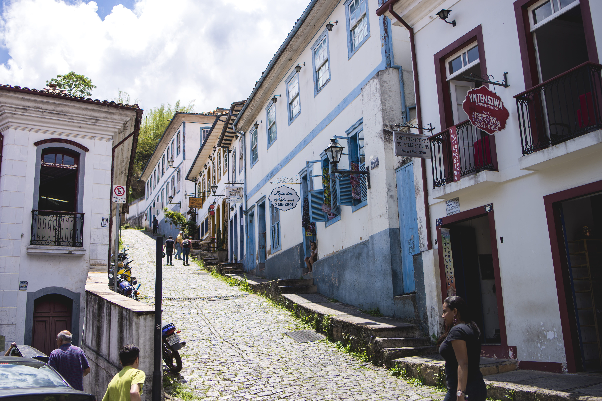
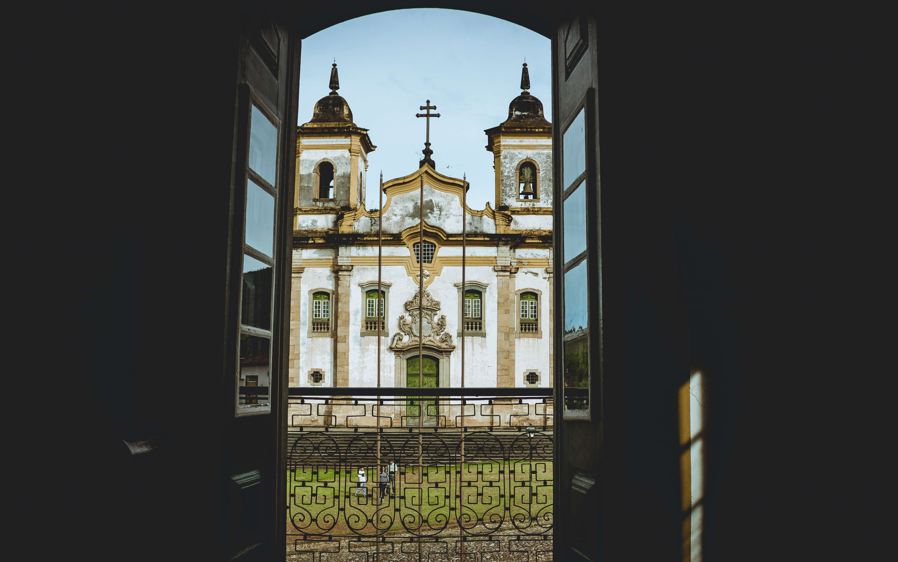

Ouro Preto é uma das cidades mais emblemáticas do Brasil, localizada no estado de Minas Gerais. Fundada no final do século XVII, a cidade foi um dos principais centros do ciclo do ouro, um período de grande exploração e prosperidade para a colônia portuguesa. Seu nome, que significa "ouro negro", faz referência à cor do minério que foi descoberto na região, impulsionando a economia e a cultura de Minas Gerais. A cidade, que foi declarada Patrimônio Cultural da Humanidade pela UNESCO em 1980, preserva uma arquitetura colonial única, com igrejas barrocas, casarões e ladeiras sinuosas que contam a história de um Brasil colonial em plena ebulição.
O conjunto arquitetônico de Ouro Preto é um dos maiores exemplos do barroco no país, com destaque para obras de artistas como Aleijadinho e Mestre Ataíde. A Igreja de São Francisco de Assis, com sua fachada ornamentada e interior rico em detalhes, é um ícone da cidade, assim como a Igreja de Nossa Senhora do Rosário dos Pretos, que retrata a influência da religiosidade africana na região. A cidade ainda preserva muitas das suas ruas estreitas, que foram moldadas pela geografia acidentada das montanhas. Esse cenário, somado à beleza de suas construções, faz de Ouro Preto um verdadeiro museu a céu aberto, que atrai turistas de todo o mundo.
